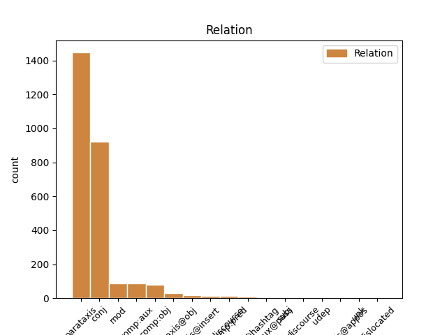
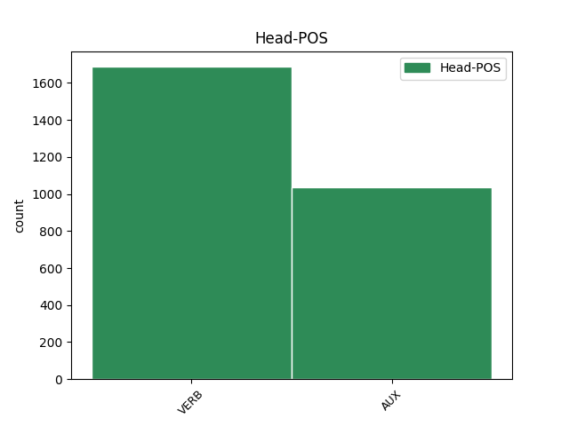
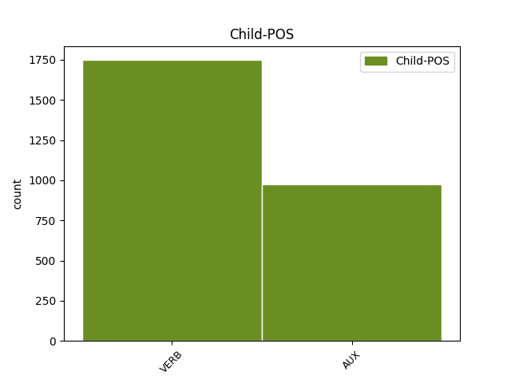

Distribution of features within this leaf



Agreement Rules sorted by frequency.
- When the dependent token is the parataxis(parataxis) of the head token, and the head token is VERB and the dependent token is VERB.
1 @user _ _ _ _ 0 _ _ _
2 non _ _ _ _ 0 _ _ _
3 credo credere VERB V Mood=Ind|Number=Sing|Person=1|Tense=Pres|VerbForm=Fin 0 _ _ _
4 sinceramente _ _ _ _ 0 _ _ _
5 che _ _ _ _ 0 _ _ _
6 il _ _ _ _ 0 _ _ _
7 problema _ _ _ _ 0 _ _ _
8 di _ _ _ _ 0 _ _ _
9 #Grillo _ _ _ _ 0 _ _ _
10 sia _ _ _ _ 0 _ _ _
11 fare _ _ _ _ 0 _ _ _
12 il _ _ _ _ 0 _ _ _
13 politico _ _ _ _ 0 _ _ _
14 o _ _ _ _ 0 _ _ _
15 meno _ _ _ _ 0 _ _ _
16 . _ _ _ _ 0 _ _ _
17 Non _ _ _ _ 0 _ _ _
18 cogliete cogliere VERB V Mood=Ind|Number=Plur|Person=2|Tense=Pres|VerbForm=Fin 3 parataxis _ _
19 il _ _ _ _ 0 _ _ _
20 punto _ _ _ _ 0 _ _ _
21 , _ _ _ _ 0 _ _ _
22 mi _ _ _ _ 0 _ _ _
23 sa _ _ _ _ 0 _ _ _
24 .. _ _ _ _ 0 _ _ _
1 @user _ _ _ _ 0 _ _ _
2 compiti _ _ _ _ 0 _ _ _
3 compiti _ _ _ _ 0 _ _ _
4 .. _ _ _ _ 0 _ _ _
5 Ma _ _ _ _ 0 _ _ _
6 io _ _ _ _ 0 _ _ _
7 dico _ _ _ _ 0 _ _ _
8 vado _ _ _ _ 0 _ _ _
9 a _ _ _ _ 0 _ _ _
10 scuola _ _ _ _ 0 _ _ _
11 e _ _ _ _ 0 _ _ _
12 non _ _ _ _ 0 _ _ _
13 si _ _ _ _ 0 _ _ _
14 fa _ _ _ _ 0 _ _ _
15 un _ _ _ _ 0 _ _ _
16 tubo _ _ _ _ 0 _ _ _
17 , _ _ _ _ 0 _ _ _
18 sto stare VERB V Mood=Ind|Number=Sing|Person=1|Tense=Pres|VerbForm=Fin 0 _ _ _
19 a _ _ _ _ 0 _ _ _
20 casa _ _ _ _ 0 _ _ _
21 malata _ _ _ _ 0 _ _ _
22 una _ _ _ _ 0 _ _ _
23 sett _ _ _ _ 0 _ _ _
24 e _ _ _ _ 0 _ _ _
25 danno dare VERB V Mood=Ind|Number=Plur|Person=3|Tense=Pres|VerbForm=Fin 18 conj _ _
26 tutte _ _ _ _ 0 _ _ _
27 le _ _ _ _ 0 _ _ _
28 verifiche _ _ _ _ 0 _ _ _
29 😡 _ _ _ _ 0 _ _ _
1 Mi _ _ _ _ 0 _ _ _
2 risulta risultare VERB V Mood=Ind|Number=Sing|Person=3|Tense=Pres|VerbForm=Fin 0 _ _ _
3 difficile _ _ _ _ 0 _ _ _
4 dir _ _ _ _ 0 _ _ _
5 lo _ _ _ _ 0 _ _ _
6 , _ _ _ _ 0 _ _ _
7 ma _ _ _ _ 0 _ _ _
8 le _ _ _ _ 0 _ _ _
9 più _ _ _ _ 0 _ _ _
10 lucide _ _ _ _ 0 _ _ _
11 analisi _ _ _ _ 0 _ _ _
12 su _ _ _ _ 0 _ _ _
13 il _ _ _ _ 0 _ _ _
14 tremendo _ _ _ _ 0 _ _ _
15 orizzonte _ _ _ _ 0 _ _ _
16 di _ _ _ _ 0 _ _ _
17 governo _ _ _ _ 0 _ _ _
18 Monti _ _ _ _ 0 _ _ _
19 - _ _ _ _ 0 _ _ _
20 Draghi _ _ _ _ 0 _ _ _
21 le _ _ _ _ 0 _ _ _
22 ha avere AUX VA Mood=Ind|Number=Sing|Person=3|Tense=Pres|VerbForm=Fin 2 parataxis _ _
23 fatte _ _ _ _ 0 _ _ _
24 Il _ _ _ _ 0 _ _ _
25 Giornale _ _ _ _ 0 _ _ _
26 . _ _ _ _ 0 _ _ _
1 Avete avere AUX VA Mood=Ind|Number=Plur|Person=2|Tense=Pres|VerbForm=Fin 0 _ _ _
2 visto _ _ _ _ 0 _ _ _
3 #Grillo _ _ _ _ 0 _ _ _
4 da _ _ _ _ 0 _ _ _
5 le _ _ _ _ 0 _ _ _
6 #iene _ _ _ _ 0 _ _ _
7 ? _ _ _ _ 0 _ _ _
8 In _ _ _ _ 0 _ _ _
9 quel _ _ _ _ 0 _ _ _
10 gesto _ _ _ _ 0 _ _ _
11 violento _ _ _ _ 0 _ _ _
12 c' _ _ _ _ 0 _ _ _
13 e' essere VERB V Mood=Ind|Number=Sing|Person=3|Tense=Pres|VerbForm=Fin 1 parataxis _ _
14 la _ _ _ _ 0 _ _ _
15 spiegazione _ _ _ _ 0 _ _ _
16 di _ _ _ _ 0 _ _ _
17 la _ _ _ _ 0 _ _ _
18 sua _ _ _ _ 0 _ _ _
19 politica _ _ _ _ 0 _ _ _
20 , _ _ _ _ 0 _ _ _
21 il _ _ _ _ 0 _ _ _
22 bastone _ _ _ _ 0 _ _ _
23 e _ _ _ _ 0 _ _ _
24 la _ _ _ _ 0 _ _ _
25 carota _ _ _ _ 0 _ _ _
26 , _ _ _ _ 0 _ _ _
27 patetico _ _ _ _ 0 _ _ _
1 @user _ _ _ _ 0 _ _ _
2 " _ _ _ _ 0 _ _ _
3 La _ _ _ _ 0 _ _ _
4 vita _ _ _ _ 0 _ _ _
5 e _ _ _ _ 0 _ _ _
6 i _ _ _ _ 0 _ _ _
7 sogni _ _ _ _ 0 _ _ _
8 sono essere AUX V Mood=Ind|Number=Plur|Person=3|Tense=Pres|VerbForm=Fin 0 _ _ _
9 fogli _ _ _ _ 0 _ _ _
10 di _ _ _ _ 0 _ _ _
11 uno _ _ _ _ 0 _ _ _
12 stesso _ _ _ _ 0 _ _ _
13 libro _ _ _ _ 0 _ _ _
14 : _ _ _ _ 0 _ _ _
15 legger _ _ _ _ 0 _ _ _
16 li _ _ _ _ 0 _ _ _
17 in _ _ _ _ 0 _ _ _
18 ordine _ _ _ _ 0 _ _ _
19 è essere AUX V Mood=Ind|Number=Sing|Person=3|Tense=Pres|VerbForm=Fin 8 parataxis _ _
20 vivere _ _ _ _ 0 _ _ _
21 , _ _ _ _ 0 _ _ _
22 sfogliar _ _ _ _ 0 _ _ _
23 li _ _ _ _ 0 _ _ _
24 a _ _ _ _ 0 _ _ _
25 caso _ _ _ _ 0 _ _ _
26 è _ _ _ _ 0 _ _ _
27 sognare _ _ _ _ 0 _ _ _
28 . _ _ _ _ 0 _ _ _
29 " _ _ _ _ 0 _ _ _
30 #aforismiquotidiani _ _ _ _ 0 _ _ _
1 @user _ _ _ _ 0 _ _ _
2 " _ _ _ _ 0 _ _ _
3 La _ _ _ _ 0 _ _ _
4 vita _ _ _ _ 0 _ _ _
5 e _ _ _ _ 0 _ _ _
6 i _ _ _ _ 0 _ _ _
7 sogni _ _ _ _ 0 _ _ _
8 sono _ _ _ _ 0 _ _ _
9 fogli _ _ _ _ 0 _ _ _
10 di _ _ _ _ 0 _ _ _
11 uno _ _ _ _ 0 _ _ _
12 stesso _ _ _ _ 0 _ _ _
13 libro _ _ _ _ 0 _ _ _
14 : _ _ _ _ 0 _ _ _
15 legger _ _ _ _ 0 _ _ _
16 li _ _ _ _ 0 _ _ _
17 in _ _ _ _ 0 _ _ _
18 ordine _ _ _ _ 0 _ _ _
19 è essere AUX V Mood=Ind|Number=Sing|Person=3|Tense=Pres|VerbForm=Fin 0 _ _ _
20 vivere _ _ _ _ 0 _ _ _
21 , _ _ _ _ 0 _ _ _
22 sfogliar _ _ _ _ 0 _ _ _
23 li _ _ _ _ 0 _ _ _
24 a _ _ _ _ 0 _ _ _
25 caso _ _ _ _ 0 _ _ _
26 è essere AUX V Mood=Ind|Number=Sing|Person=3|Tense=Pres|VerbForm=Fin 19 conj _ _
27 sognare _ _ _ _ 0 _ _ _
28 . _ _ _ _ 0 _ _ _
29 " _ _ _ _ 0 _ _ _
30 #aforismiquotidiani _ _ _ _ 0 _ _ _
1 #ballaró _ _ _ _ 0 _ _ _
2 il _ _ _ _ 0 _ _ _
3 Governo _ _ _ _ 0 _ _ _
4 Monti _ _ _ _ 0 _ _ _
5 ha avere AUX VA Mood=Ind|Number=Sing|Person=3|Tense=Pres|VerbForm=Fin 0 _ _ _
6 fatto _ _ _ _ 0 _ _ _
7 cassa _ _ _ _ 0 _ _ _
8 e _ _ _ _ 0 _ _ _
9 non _ _ _ _ 0 _ _ _
10 poteva potere VERB V Mood=Ind|Number=Sing|Person=3|Tense=Imp|VerbForm=Fin 5 conj _ _
11 che _ _ _ _ 0 _ _ _
12 far _ _ _ _ 0 _ _ _
13 la _ _ _ _ 0 _ _ _
14 su _ _ _ _ 0 _ _ _
15 la _ _ _ _ 0 _ _ _
16 massa _ _ _ _ 0 _ _ _
17 , _ _ _ _ 0 _ _ _
18 pensionati _ _ _ _ 0 _ _ _
19 ... _ _ _ _ 0 _ _ _
1 #Grillo _ _ _ _ 0 _ _ _
2 non _ _ _ _ 0 _ _ _
3 mi _ _ _ _ 0 _ _ _
4 piace piacere VERB V Mood=Ind|Number=Sing|Person=3|Tense=Pres|VerbForm=Fin 0 _ _ _
5 , _ _ _ _ 0 _ _ _
6 ma _ _ _ _ 0 _ _ _
7 sta essere AUX VA Mood=Ind|Number=Sing|Person=3|Tense=Pres|VerbForm=Fin 4 conj _ _
8 dimostrando _ _ _ _ 0 _ _ _
9 che _ _ _ _ 0 _ _ _
10 il _ _ _ _ 0 _ _ _
11 nuovo _ _ _ _ 0 _ _ _
12 strumento _ _ _ _ 0 _ _ _
13 per _ _ _ _ 0 _ _ _
14 fare _ _ _ _ 0 _ _ _
15 #politica _ _ _ _ 0 _ _ _
16 è _ _ _ _ 0 _ _ _
17 il _ _ _ _ 0 _ _ _
18 #movimento _ _ _ _ 0 _ _ _
19 multilocale _ _ _ _ 0 _ _ _
20 e _ _ _ _ 0 _ _ _
21 non _ _ _ _ 0 _ _ _
22 il _ _ _ _ 0 _ _ _
23 partito _ _ _ _ 0 _ _ _
24 nazionale _ _ _ _ 0 _ _ _
1 Avete avere AUX VA Mood=Ind|Number=Plur|Person=2|Tense=Pres|VerbForm=Fin 0 _ _ _
2 visto vedere VERB V Mood=Ind|Number=Sing|Person=1|Tense=Pres|VerbForm=Fin 1 comp:aux _ _
3 #Grillo _ _ _ _ 0 _ _ _
4 da _ _ _ _ 0 _ _ _
5 le _ _ _ _ 0 _ _ _
6 #iene _ _ _ _ 0 _ _ _
7 ? _ _ _ _ 0 _ _ _
8 In _ _ _ _ 0 _ _ _
9 quel _ _ _ _ 0 _ _ _
10 gesto _ _ _ _ 0 _ _ _
11 violento _ _ _ _ 0 _ _ _
12 c' _ _ _ _ 0 _ _ _
13 e' _ _ _ _ 0 _ _ _
14 la _ _ _ _ 0 _ _ _
15 spiegazione _ _ _ _ 0 _ _ _
16 di _ _ _ _ 0 _ _ _
17 la _ _ _ _ 0 _ _ _
18 sua _ _ _ _ 0 _ _ _
19 politica _ _ _ _ 0 _ _ _
20 , _ _ _ _ 0 _ _ _
21 il _ _ _ _ 0 _ _ _
22 bastone _ _ _ _ 0 _ _ _
23 e _ _ _ _ 0 _ _ _
24 la _ _ _ _ 0 _ _ _
25 carota _ _ _ _ 0 _ _ _
26 , _ _ _ _ 0 _ _ _
27 patetico _ _ _ _ 0 _ _ _
1 Consiglio _ _ _ _ 0 _ _ _
2 di _ _ _ _ 0 _ _ _
3 il _ _ _ _ 0 _ _ _
4 giorno _ _ _ _ 0 _ _ _
5 . _ _ _ _ 0 _ _ _
6 Il _ _ _ _ 0 _ _ _
7 paradiso _ _ _ _ 0 _ _ _
8 di _ _ _ _ 0 _ _ _
9 la _ _ _ _ 0 _ _ _
10 moda _ _ _ _ 0 _ _ _
11 lo _ _ _ _ 0 _ _ _
12 conoscete _ _ _ _ 0 _ _ _
13 ? _ _ _ _ 0 _ _ _
14 Noooo _ _ _ _ 0 _ _ _
15 ? _ _ _ _ 0 _ _ _
16 Visto vedere VERB V Mood=Ind|Number=Sing|Person=1|Tense=Pres|VerbForm=Fin 23 mod _ _
17 che _ _ _ _ 0 _ _ _
18 oggi _ _ _ _ 0 _ _ _
19 sono _ _ _ _ 0 _ _ _
20 buona _ _ _ _ 0 _ _ _
21 , _ _ _ _ 0 _ _ _
22 vi _ _ _ _ 0 _ _ _
23 rivelo rivelare VERB V Mood=Ind|Number=Sing|Person=1|Tense=Pres|VerbForm=Fin 0 _ _ _
24 un _ _ _ _ 0 _ _ _
25 piccolo _ _ _ _ 0 _ _ _
26 ... _ _ _ _ 0 _ _ _
27 http://t.co/UvVPxyXB _ _ _ _ 0 _ _ _
1 Ciarrapico _ _ _ _ 0 _ _ _
2 : _ _ _ _ 0 _ _ _
3 Comunque _ _ _ _ 0 _ _ _
4 sa sapere VERB V Mood=Ind|Number=Sing|Person=3|Tense=Pres|VerbForm=Fin 0 _ _ _
5 quale _ _ _ _ 0 _ _ _
6 è essere AUX V Mood=Ind|Number=Sing|Person=3|Tense=Pres|VerbForm=Fin 4 comp:obj _ _
7 il _ _ _ _ 0 _ _ _
8 problema _ _ _ _ 0 _ _ _
9 di _ _ _ _ 0 _ _ _
10 il _ _ _ _ 0 _ _ _
11 governo _ _ _ _ 0 _ _ _
12 Monti _ _ _ _ 0 _ _ _
13 ? _ _ _ _ 0 _ _ _
14 Quale _ _ _ _ 0 _ _ _
15 , _ _ _ _ 0 _ _ _
16 senatore _ _ _ _ 0 _ _ _
17 ? _ _ _ _ 0 _ _ _
18 Che _ _ _ _ 0 _ _ _
19 so' _ _ _ _ 0 _ _ _
20 troppo _ _ _ _ 0 _ _ _
21 brutti _ _ _ _ 0 _ _ _
22 #Ahahahahah _ _ _ _ 0 _ _ _
1 3 _ _ _ _ 0 _ _ _
2 anni _ _ _ _ 0 _ _ _
3 fà _ _ _ _ 0 _ _ _
4 ero essere AUX V Mood=Ind|Number=Sing|Person=1|Tense=Imp|VerbForm=Fin 0 _ _ _
5 milanista _ _ _ _ 0 _ _ _
6 ... _ _ _ _ 0 _ _ _
7 Poi _ _ _ _ 0 _ _ _
8 sono essere AUX VA Mood=Ind|Number=Sing|Person=1|Tense=Pres|VerbForm=Fin 4 mod _ _
9 diventata _ _ _ _ 0 _ _ _
10 juventina _ _ _ _ 0 _ _ _
11 ... _ _ _ _ 0 _ _ _
12 però _ _ _ _ 0 _ _ _
13 , _ _ _ _ 0 _ _ _
14 boh _ _ _ _ 0 _ _ _
15 , _ _ _ _ 0 _ _ _
16 mi _ _ _ _ 0 _ _ _
17 sento _ _ _ _ 0 _ _ _
18 ancora _ _ _ _ 0 _ _ _
19 di _ _ _ _ 0 _ _ _
20 appartenenza _ _ _ _ 0 _ _ _
21 milanista _ _ _ _ 0 _ _ _
22 ... _ _ _ _ 0 _ _ _
23 mi _ _ _ _ 0 _ _ _
24 sento _ _ _ _ 0 _ _ _
25 il _ _ _ _ 0 _ _ _
26 sangue _ _ _ _ 0 _ _ _
27 milanista _ _ _ _ 0 _ _ _
1 la _ _ _ _ 0 _ _ _
2 #fornero _ _ _ _ 0 _ _ _
3 se _ _ _ _ 0 _ _ _
4 mette _ _ _ _ 0 _ _ _
5 a _ _ _ _ 0 _ _ _
6 piagne _ _ _ _ 0 _ _ _
7 mentre _ _ _ _ 0 _ _ _
8 spiega spiegare VERB V Mood=Ind|Number=Sing|Person=3|Tense=Pres|VerbForm=Fin 0 _ _ _
9 come _ _ _ _ 0 _ _ _
10 la _ _ _ _ 0 _ _ _
11 #manovra _ _ _ _ 0 _ _ _
12 di _ _ _ _ 0 _ _ _
13 il _ _ _ _ 0 _ _ _
14 governo _ _ _ _ 0 _ _ _
15 #MONTI _ _ _ _ 0 _ _ _
16 metterà mettere VERB V Mood=Ind|Number=Sing|Person=3|Tense=Fut|VerbForm=Fin 8 comp:obj _ _
17 in _ _ _ _ 0 _ _ _
18 ginocchio _ _ _ _ 0 _ _ _
19 la _ _ _ _ 0 _ _ _
20 gente _ _ _ _ 0 _ _ _
21 : _ _ _ _ 0 _ _ _
22 #lacrimedicoccodrillo _ _ _ _ 0 _ _ _
1 Non _ _ _ _ 0 _ _ _
2 li _ _ _ _ 0 _ _ _
3 posso potere AUX VM Mood=Ind|Number=Sing|Person=1|Tense=Pres|VerbForm=Fin 0 _ _ _
4 vedere _ _ _ _ 0 _ _ _
5 i _ _ _ _ 0 _ _ _
6 video _ _ _ _ 0 _ _ _
7 sto stare VERB V Mood=Ind|Number=Sing|Person=1|Tense=Pres|VerbForm=Fin 3 mod _ _
8 da _ _ _ _ 0 _ _ _
9 il _ _ _ _ 0 _ _ _
10 telefono _ _ _ _ 0 _ _ _
11 :-( _ _ _ _ 0 _ _ _
12 ... _ _ _ _ 0 _ _ _
13 ma _ _ _ _ 0 _ _ _
14 sei _ _ _ _ 0 _ _ _
15 la _ _ _ _ 0 _ _ _
16 piu _ _ _ _ 0 _ _ _
17 bella _ _ _ _ 0 _ _ _
18 so _ _ _ _ 0 _ _ _
19 sempre _ _ _ _ 0 _ _ _
20 io _ _ _ _ 0 _ _ _
21 — _ _ _ _ 0 _ _ _
22 tell _ _ _ _ 0 _ _ _
23 me _ _ _ _ 0 _ _ _
24 why _ _ _ _ 0 _ _ _
25 . _ _ _ _ 0 _ _ _
26 http://t.co/cTfFTMEPuj _ _ _ _ 0 _ _ _
1 Tg3 _ _ _ _ 0 _ _ _
2 video _ _ _ _ 0 _ _ _
3 Mario _ _ _ _ 0 _ _ _
4 Monti _ _ _ _ 0 _ _ _
5 da _ _ _ _ 0 _ _ _
6 Berlino _ _ _ _ 0 _ _ _
7 parla parlare VERB V Mood=Ind|Number=Sing|Person=3|Tense=Pres|VerbForm=Fin 0 _ _ _
8 di _ _ _ _ 0 _ _ _
9 l' _ _ _ _ 0 _ _ _
10 Italia _ _ _ _ 0 _ _ _
11 : _ _ _ _ 0 _ _ _
12 c' _ _ _ _ 0 _ _ _
13 è essere VERB V Mood=Ind|Number=Sing|Person=3|Tense=Pres|VerbForm=Fin 7 parataxis@obj _ _
14 un _ _ _ _ 0 _ _ _
15 enorme _ _ _ _ 0 _ _ _
16 lavoro _ _ _ _ 0 _ _ _
17 da _ _ _ _ 0 _ _ _
18 fare _ _ _ _ 0 _ _ _
19 . _ _ _ _ 0 _ _ _
20 A _ _ _ _ 0 _ _ _
21 cominciare _ _ _ _ 0 _ _ _
22 da _ _ _ _ 0 _ _ _
23 la _ _ _ _ 0 _ _ _
24 rimozione _ _ _ _ 0 _ _ _
25 ... _ _ _ _ 0 _ _ _
26 http://t.co/VXaxdKAp _ _ _ _ 0 _ _ _
1 @user _ _ _ _ 0 _ _ _
2 #Grillo _ _ _ _ 0 _ _ _
3 twitta twittare VERB V Mood=Ind|Number=Sing|Person=3|Tense=Pres|VerbForm=Fin 0 _ _ _
4 : _ _ _ _ 0 _ _ _
5 Sono essere AUX V Mood=Ind|Number=Sing|Person=1|Tense=Pres|VerbForm=Fin 3 parataxis@obj _ _
6 in _ _ _ _ 0 _ _ _
7 viaggio _ _ _ _ 0 _ _ _
8 tra _ _ _ _ 0 _ _ _
9 Piacenza _ _ _ _ 0 _ _ _
10 e _ _ _ _ 0 _ _ _
11 Parma _ _ _ _ 0 _ _ _
12 . _ _ _ _ 0 _ _ _
13 Venite _ _ _ _ 0 _ _ _
14 in _ _ _ _ 0 _ _ _
15 piazzale _ _ _ _ 0 _ _ _
16 di _ _ _ _ 0 _ _ _
17 la _ _ _ _ 0 _ _ _
18 Pace _ _ _ _ 0 _ _ _
19 a _ _ _ _ 0 _ _ _
20 le _ _ _ _ 0 _ _ _
21 21.30 _ _ _ _ 0 _ _ _
22 ! _ _ _ _ 0 _ _ _
23 #m5sTour _ _ _ _ 0 _ _ _
24 http://t.co/Rh5Csggg _ _ _ _ 0 _ _ _
1 unica _ _ _ _ 0 _ _ _
2 soluzione _ _ _ _ 0 _ _ _
3 governo _ _ _ _ 0 _ _ _
4 #Monti _ _ _ _ 0 _ _ _
5 . _ _ _ _ 0 _ _ _
6 I _ _ _ _ 0 _ _ _
7 politici _ _ _ _ 0 _ _ _
8 da _ _ _ _ 0 _ _ _
9 parte _ _ _ _ 0 _ _ _
10 e _ _ _ _ 0 _ _ _
11 mi _ _ _ _ 0 _ _ _
12 dispiace dispiacere VERB V Mood=Ind|Number=Sing|Person=3|Tense=Pres|VerbForm=Fin 16 parataxis@insert _ _
13 ma _ _ _ _ 0 _ _ _
14 Di _ _ _ _ 0 _ _ _
15 Pietro _ _ _ _ 0 _ _ _
16 sta essere AUX VA Mood=Ind|Number=Sing|Person=3|Tense=Pres|VerbForm=Fin 0 _ _ _
17 sbagliando _ _ _ _ 0 _ _ _
18 tutto _ _ _ _ 0 _ _ _
19 . _ _ _ _ 0 _ _ _
20 #noalvoto _ _ _ _ 0 _ _ _
1 #Grillo _ _ _ _ 0 _ _ _
2 incalza incalzare VERB V Mood=Ind|Number=Sing|Person=3|Tense=Pres|VerbForm=Fin 0 _ _ _
3 : _ _ _ _ 0 _ _ _
4 “ _ _ _ _ 0 _ _ _
5 siamo essere AUX V Mood=Ind|Number=Plur|Person=1|Tense=Pres|VerbForm=Fin 2 parataxis@hashtag _ _
6 a _ _ _ _ 0 _ _ _
7 la _ _ _ _ 0 _ _ _
8 #resadeiconti _ _ _ _ 0 _ _ _
9 ” _ _ _ _ 0 _ _ _
10 - _ _ _ _ 0 _ _ _
11 http://t.co/8XxsT44q _ _ _ _ 0 _ _ _
1 @user _ _ _ _ 0 _ _ _
2 beh _ _ _ _ 0 _ _ _
3 , _ _ _ _ 0 _ _ _
4 beate _ _ _ _ 0 _ _ _
5 loro _ _ _ _ 0 _ _ _
6 ! _ _ _ _ 0 _ _ _
7 Io _ _ _ _ 0 _ _ _
8 nn _ _ _ _ 0 _ _ _
9 possiedo possedere VERB V Mood=Ind|Number=Sing|Person=1|Tense=Pres|VerbForm=Fin 0 _ _ _
10 nulla _ _ _ _ 0 _ _ _
11 di _ _ _ _ 0 _ _ _
12 tutto _ _ _ _ 0 _ _ _
13 ciò _ _ _ _ 0 _ _ _
14 .. _ _ _ _ 0 _ _ _
15 Devo dovere AUX VM Mood=Ind|Number=Sing|Person=1|Tense=Pres|VerbForm=Fin 9 mod _ _
16 preoccupar _ _ _ _ 0 _ _ _
17 mi _ _ _ _ 0 _ _ _
18 ?! _ _ _ _ 0 _ _ _
19 #ironiaportamivia _ _ _ _ 0 _ _ _
1 @user _ _ _ _ 0 _ _ _
2 compiti _ _ _ _ 0 _ _ _
3 compiti _ _ _ _ 0 _ _ _
4 .. _ _ _ _ 0 _ _ _
5 Ma _ _ _ _ 0 _ _ _
6 io _ _ _ _ 0 _ _ _
7 dico dire VERB V Mood=Ind|Number=Sing|Person=1|Tense=Pres|VerbForm=Fin 8 parataxis@discourse _ _
8 vado andare VERB V Mood=Ind|Number=Sing|Person=1|Tense=Pres|VerbForm=Fin 0 _ _ _
9 a _ _ _ _ 0 _ _ _
10 scuola _ _ _ _ 0 _ _ _
11 e _ _ _ _ 0 _ _ _
12 non _ _ _ _ 0 _ _ _
13 si _ _ _ _ 0 _ _ _
14 fa _ _ _ _ 0 _ _ _
15 un _ _ _ _ 0 _ _ _
16 tubo _ _ _ _ 0 _ _ _
17 , _ _ _ _ 0 _ _ _
18 sto _ _ _ _ 0 _ _ _
19 a _ _ _ _ 0 _ _ _
20 casa _ _ _ _ 0 _ _ _
21 malata _ _ _ _ 0 _ _ _
22 una _ _ _ _ 0 _ _ _
23 sett _ _ _ _ 0 _ _ _
24 e _ _ _ _ 0 _ _ _
25 danno _ _ _ _ 0 _ _ _
26 tutte _ _ _ _ 0 _ _ _
27 le _ _ _ _ 0 _ _ _
28 verifiche _ _ _ _ 0 _ _ _
29 😡 _ _ _ _ 0 _ _ _
1 Governo _ _ _ _ 0 _ _ _
2 Monti _ _ _ _ 0 _ _ _
3 : _ _ _ _ 0 _ _ _
4 Golpe _ _ _ _ 0 _ _ _
5 ? _ _ _ _ 0 _ _ _
6 Alieni _ _ _ _ 0 _ _ _
7 ? _ _ _ _ 0 _ _ _
8 Massoni _ _ _ _ 0 _ _ _
9 ? _ _ _ _ 0 _ _ _
10 : _ _ _ _ 0 _ _ _
11 Il _ _ _ _ 0 _ _ _
12 Tg1 _ _ _ _ 0 _ _ _
13 è essere AUX V Mood=Ind|Number=Sing|Person=3|Tense=Pres|VerbForm=Fin 0 _ _ _
14 attonito _ _ _ _ 0 _ _ _
15 : _ _ _ _ 0 _ _ _
16 ma _ _ _ _ 0 _ _ _
17 chi _ _ _ _ 0 _ _ _
18 sono essere AUX V Mood=Ind|Number=Plur|Person=3|Tense=Pres|VerbForm=Fin 13 parataxis@obj _ _
19 questi _ _ _ _ 0 _ _ _
20 ? _ _ _ _ 0 _ _ _
21 Perché _ _ _ _ 0 _ _ _
22 fra _ _ _ _ 0 _ _ _
23 le _ _ _ _ 0 _ _ _
24 donne _ _ _ _ 0 _ _ _
25 non _ _ _ _ 0 _ _ _
26 ce _ _ _ _ 0 _ _ _
27 n' _ _ _ _ 0 _ _ _
28 è _ _ _ _ 0 _ _ _
29 ne... _ _ _ _ 0 _ _ _
30 http://t.co/0lVOZdTc _ _ _ _ 0 _ _ _
1 @user1 _ _ _ _ 0 _ _ _
2 @user2 _ _ _ _ 0 _ _ _
3 se _ _ _ _ 0 _ _ _
4 saranno essere AUX VA Mood=Ind|Number=Plur|Person=3|Tense=Fut|VerbForm=Fin 0 _ _ _
5 confermate confermare VERB V Mood=Ind|Number=Plur|Person=2|Tense=Pres|VerbForm=Fin 4 comp:aux@pass _ _
6 le _ _ _ _ 0 _ _ _
7 indiscrezioni _ _ _ _ 0 _ _ _
8 , _ _ _ _ 0 _ _ _
9 accetterete _ _ _ _ 0 _ _ _
10 le _ _ _ _ 0 _ _ _
11 timidissime _ _ _ _ 0 _ _ _
12 #liberalizzazioni _ _ _ _ 0 _ _ _
13 di _ _ _ _ 0 _ _ _
14 il _ _ _ _ 0 _ _ _
15 #governo _ _ _ _ 0 _ _ _
16 #monti _ _ _ _ 0 _ _ _
17 ? _ _ _ _ 0 _ _ _
1 Qual _ _ _ _ 0 _ _ _
2 è essere AUX V Mood=Ind|Number=Sing|Person=3|Tense=Pres|VerbForm=Fin 0 _ _ _
3 il _ _ _ _ 0 _ _ _
4 tuo _ _ _ _ 0 _ _ _
5 numero _ _ _ _ 0 _ _ _
6 fortunato _ _ _ _ 0 _ _ _
7 ? _ _ _ _ 0 _ _ _
8 — _ _ _ _ 0 _ _ _
9 Non _ _ _ _ 0 _ _ _
10 ce _ _ _ _ 0 _ _ _
11 l' _ _ _ _ 0 _ _ _
12 ho avere VERB V Mood=Ind|Number=Sing|Person=1|Tense=Pres|VerbForm=Fin 2 parataxis@obj _ SpaceAfter=No
13 , _ _ _ _ 0 _ _ _
14 ma _ _ _ _ 0 _ _ _
15 mi _ _ _ _ 0 _ _ _
16 piace _ _ _ _ 0 _ _ _
17 il _ _ _ _ 0 _ _ _
18 numero _ _ _ _ 0 _ _ _
19 5 _ _ _ _ 0 _ _ _
20 http://t.co/PzCVzGQlMS _ _ _ _ 0 _ _ _
1 Non _ _ _ _ 0 _ _ _
2 c' _ _ _ _ 0 _ _ _
3 è essere VERB V Mood=Ind|Number=Sing|Person=3|Tense=Pres|VerbForm=Fin 0 _ _ _
4 una _ _ _ _ 0 _ _ _
5 cosa _ _ _ _ 0 _ _ _
6 detta _ _ _ _ 0 _ _ _
7 o _ _ _ _ 0 _ _ _
8 fatta _ _ _ _ 0 _ _ _
9 da _ _ _ _ 0 _ _ _
10 sto _ _ _ _ 0 _ _ _
11 governo _ _ _ _ 0 _ _ _
12 #Monti _ _ _ _ 0 _ _ _
13 che _ _ _ _ 0 _ _ _
14 non _ _ _ _ 0 _ _ _
15 mi _ _ _ _ 0 _ _ _
16 disgusti _ _ _ _ 0 _ _ _
17 da _ _ _ _ 0 _ _ _
18 il _ _ _ _ 0 _ _ _
19 profondo _ _ _ _ 0 _ _ _
20 , _ _ _ _ 0 _ _ _
21 credo credere VERB V Mood=Ind|Number=Sing|Person=1|Tense=Pres|VerbForm=Fin 3 parataxis@insert _ SpaceAfter=No
22 . _ _ _ _ 0 _ _ _
23 C' _ _ _ _ 0 _ _ _
24 ho _ _ _ _ 0 _ _ _
25 riflettuto _ _ _ _ 0 _ _ _
26 , _ _ _ _ 0 _ _ _
27 ma _ _ _ _ 0 _ _ _
28 non _ _ _ _ 0 _ _ _
29 ne _ _ _ _ 0 _ _ _
30 ho _ _ _ _ 0 _ _ _
31 trovata _ _ _ _ 0 _ _ _
32 nessuna _ _ _ _ 0 _ _ _
33 . _ _ _ _ 0 _ _ _
1 Por _ _ _ _ 0 _ _ _
2 si _ _ _ _ 0 _ _ _
3 a _ _ _ _ 0 _ _ _
4 distanza _ _ _ _ 0 _ _ _
5 , _ _ _ _ 0 _ _ _
6 quel _ _ _ _ 0 _ _ _
7 tanto _ _ _ _ 0 _ _ _
8 che _ _ _ _ 0 _ _ _
9 basta _ _ _ _ 0 _ _ _
10 per _ _ _ _ 0 _ _ _
11 mettere _ _ _ _ 0 _ _ _
12 bene _ _ _ _ 0 _ _ _
13 a _ _ _ _ 0 _ _ _
14 fuoco _ _ _ _ 0 _ _ _
15 e _ _ _ _ 0 _ _ _
16 osservare _ _ _ _ 0 _ _ _
17 che _ _ _ _ 0 _ _ _
18 le _ _ _ _ 0 _ _ _
19 cose _ _ _ _ 0 _ _ _
20 non _ _ _ _ 0 _ _ _
21 sono essere AUX V Mood=Ind|Number=Plur|Person=3|Tense=Pres|VerbForm=Fin 0 _ _ _
22 esattamente _ _ _ _ 0 _ _ _
23 come _ _ _ _ 0 _ _ _
24 credevi credere VERB V Mood=Ind|Number=Sing|Person=2|Tense=Imp|VerbForm=Fin 21 comp:pred _ _
25 che _ _ _ _ 0 _ _ _
26 fossero _ _ _ _ 0 _ _ _
27 . _ _ _ _ 0 _ _ _
1 È essere AUX V Mood=Ind|Number=Sing|Person=3|Tense=Pres|VerbForm=Fin 0 _ _ _
2 bello _ _ _ _ 0 _ _ _
3 cambiare _ _ _ _ 0 _ _ _
4 lavoro _ _ _ _ 0 _ _ _
5 ha avere AUX VA Mood=Ind|Number=Sing|Person=3|Tense=Pres|VerbForm=Fin 1 parataxis@insert _ _
6 detto _ _ _ _ 0 _ _ _
7 Mario _ _ _ _ 0 _ _ _
8 Monti _ _ _ _ 0 _ _ _
9 , _ _ _ _ 0 _ _ _
10 68 _ _ _ _ 0 _ _ _
11 anni _ _ _ _ 0 _ _ _
12 , _ _ _ _ 0 _ _ _
13 pornodivo _ _ _ _ 0 _ _ _
14 ! _ _ _ _ 0 _ _ _
15 @user _ _ _ _ 0 _ _ _
1 @user1 _ _ _ _ 0 _ _ _
2 @user2 _ _ _ _ 0 _ _ _
3 @user3 _ _ _ _ 0 _ _ _
4 @user4 _ _ _ _ 0 _ _ _
5 va andare VERB V Mood=Ind|Number=Sing|Person=3|Tense=Pres|VerbForm=Fin 15 parataxis@discourse _ _
6 be' _ _ _ _ 0 _ _ _
7 di _ _ _ _ 0 _ _ _
8 destra _ _ _ _ 0 _ _ _
9 o _ _ _ _ 0 _ _ _
10 di _ _ _ _ 0 _ _ _
11 sinistra _ _ _ _ 0 _ _ _
12 per _ _ _ _ 0 _ _ _
13 me _ _ _ _ 0 _ _ _
14 delinquenti _ _ _ _ 0 _ _ _
15 sono essere AUX V Mood=Ind|Number=Plur|Person=3|Tense=Pres|VerbForm=Fin 0 _ _ _
16 ... _ _ _ _ 0 _ _ _
17 Per _ _ _ _ 0 _ _ _
18 te _ _ _ _ 0 _ _ _
19 invece _ _ _ _ 0 _ _ _
20 è _ _ _ _ 0 _ _ _
21 un _ _ _ _ 0 _ _ _
22 fatto _ _ _ _ 0 _ _ _
23 di _ _ _ _ 0 _ _ _
24 fazioni _ _ _ _ 0 _ _ _
1 RT _ _ _ _ 0 _ _ _
2 @user _ _ _ _ 0 _ _ _
3 : _ _ _ _ 0 _ _ _
4 Uscire _ _ _ _ 0 _ _ _
5 da _ _ _ _ 0 _ _ _
6 la _ _ _ _ 0 _ _ _
7 stanza _ _ _ _ 0 _ _ _
8 in _ _ _ _ 0 _ _ _
9 pigiama _ _ _ _ 0 _ _ _
10 e _ _ _ _ 0 _ _ _
11 trovar _ _ _ _ 0 _ _ _
12 si _ _ _ _ 0 _ _ _
13 davanti _ _ _ _ 0 _ _ _
14 sconosciuti _ _ _ _ 0 _ _ _
15 che _ _ _ _ 0 _ _ _
16 ti _ _ _ _ 0 _ _ _
17 fissano _ _ _ _ 0 _ _ _
18 . _ _ _ _ 0 _ _ _
19 Cos' _ _ _ _ 0 _ _ _
20 è essere AUX V Mood=Ind|Number=Sing|Person=3|Tense=Pres|VerbForm=Fin 23 discourse _ SpaceAfter=No
21 ? _ _ _ _ 0 _ _ _
22 Non _ _ _ _ 0 _ _ _
23 avete avere AUX VA Mood=Ind|Number=Plur|Person=2|Tense=Pres|VerbForm=Fin 0 _ _ _
24 mai _ _ _ _ 0 _ _ _
25 visto _ _ _ _ 0 _ _ _
26 un _ _ _ _ 0 _ _ _
27 pigiama _ _ _ _ 0 _ _ _
28 co… _ _ _ _ 0 _ _ _
1 La _ _ _ _ 0 _ _ _
2 CGIL _ _ _ _ 0 _ _ _
3 deve dovere AUX VM Mood=Ind|Number=Sing|Person=3|Tense=Pres|VerbForm=Fin 0 _ _ _
4 proclamare _ _ _ _ 0 _ _ _
5 lo _ _ _ _ 0 _ _ _
6 sciopero _ _ _ _ 0 _ _ _
7 generale _ _ _ _ 0 _ _ _
8 . _ _ _ _ 0 _ _ _
9 La _ _ _ _ 0 _ _ _
10 manovra _ _ _ _ 0 _ _ _
11 di _ _ _ _ 0 _ _ _
12 il _ _ _ _ 0 _ _ _
13 governo _ _ _ _ 0 _ _ _
14 Monti _ _ _ _ 0 _ _ _
15 è _ _ _ _ 0 _ _ _
16 innacetabile _ _ _ _ 0 _ _ _
17 , _ _ _ _ 0 _ _ _
18 pagano _ _ _ _ 0 _ _ _
19 sempre _ _ _ _ 0 _ _ _
20 i _ _ _ _ 0 _ _ _
21 più _ _ _ _ 0 _ _ _
22 deboli _ _ _ _ 0 _ _ _
23 . _ _ _ _ 0 _ _ _
24 Basta bastare VERB V Mood=Ind|Number=Sing|Person=3|Tense=Pres|VerbForm=Fin 3 discourse _ SpaceAfter=No
25 ! _ _ _ _ 0 _ _ _
26 1 _ _ _ _ 0 _ _ _
1 #Grillo _ _ _ _ 0 _ _ _
2 è essere AUX V Mood=Ind|Number=Sing|Person=3|Tense=Pres|VerbForm=Fin 0 _ _ _
3 la _ _ _ _ 0 _ _ _
4 star _ _ _ _ 0 _ _ _
5 di _ _ _ _ 0 _ _ _
6 la _ _ _ _ 0 _ _ _
7 serata _ _ _ _ 0 _ _ _
8 . _ _ _ _ 0 _ _ _
9 In _ _ _ _ 0 _ _ _
10 #serviziopubblico _ _ _ _ 0 _ _ _
11 e _ _ _ _ 0 _ _ _
12 #piazzapulita _ _ _ _ 0 _ _ _
13 sarà essere AUX V Mood=Ind|Number=Sing|Person=3|Tense=Fut|VerbForm=Fin 2 parataxis@hashtag _ _
14 un _ _ _ _ 0 _ _ _
15 #refuso _ _ _ _ 0 _ _ _
1 @user _ _ _ _ 0 _ _ _
2 lo _ _ _ _ 0 _ _ _
3 spero sperare VERB V Mood=Ind|Number=Sing|Person=1|Tense=Pres|VerbForm=Fin 0 _ _ _
4 anche _ _ _ _ 0 _ _ _
5 io _ _ _ _ 0 _ _ _
6 !! _ _ _ _ 0 _ _ _
7 Ho _ _ _ _ 0 _ _ _
8 famissima _ _ _ _ 0 _ _ _
9 * _ _ _ _ 0 _ _ _
10 ridacchia ridacchiare VERB V Mood=Ind|Number=Sing|Person=3|Tense=Pres|VerbForm=Fin 3 discourse _ _
11 * _ _ _ _ 0 _ _ _
1 * _ _ _ _ 0 _ _ _
2 FLASH _ _ _ _ 0 _ _ _
3 - _ _ _ _ 0 _ _ _
4 GOVERNO _ _ _ _ 0 _ _ _
5 : _ _ _ _ 0 _ _ _
6 MONTI _ _ _ _ 0 _ _ _
7 , _ _ _ _ 0 _ _ _
8 VISTO _ _ _ _ 0 _ _ _
9 CHE _ _ _ _ 0 _ _ _
10 SPLENDIDA _ _ _ _ 0 _ _ _
11 GIORNATA _ _ _ _ 0 _ _ _
12 ? _ _ _ _ 0 _ _ _
13 - _ _ _ _ 0 _ _ _
14 La _ _ _ _ 0 _ _ _
15 prossima _ _ _ _ 0 _ _ _
16 sarà essere AUX V Mood=Ind|Number=Sing|Person=3|Tense=Fut|VerbForm=Fin 0 _ _ _
17 avete avere AUX VA Mood=Ind|Number=Plur|Person=2|Tense=Pres|VerbForm=Fin 16 subj _ _
18 visto _ _ _ _ 0 _ _ _
19 che _ _ _ _ 0 _ _ _
20 stronzi _ _ _ _ 0 _ _ _
21 ? _ _ _ _ 0 _ _ _
22 :( _ _ _ _ 0 _ _ _
1 http://t.co/XC3XXRWY _ _ _ _ 0 _ _ _
2 dannata _ _ _ _ 0 _ _ _
3 onda _ _ _ _ 0 _ _ _
4 io _ _ _ _ 0 _ _ _
5 vi _ _ _ _ 0 _ _ _
6 stupro stuprare VERB V Mood=Ind|Number=Sing|Person=1|Tense=Pres|VerbForm=Fin 0 _ _ _
7 a _ _ _ _ 0 _ _ _
8 tutti _ _ _ _ 0 _ _ _
9 e _ _ _ _ 0 _ _ _
10 tre _ _ _ _ 0 _ _ _
11 come _ _ _ _ 0 _ _ _
12 state stare VERB V Mood=Ind|Number=Plur|Person=2|Tense=Pres|VerbForm=Fin 6 unk _ _
13 Kyuhyun _ _ _ _ 0 _ _ _
14 , _ _ _ _ 0 _ _ _
15 Eunhyuk _ _ _ _ 0 _ _ _
16 e _ _ _ _ 0 _ _ _
17 Leeteuk _ _ _ _ 0 _ _ _
18 *A* _ _ _ _ 0 _ _ _
1 Messaggi _ _ _ _ 0 _ _ _
2 privati _ _ _ _ 0 _ _ _
3 anche _ _ _ _ 0 _ _ _
4 a _ _ _ _ 0 _ _ _
5 chi _ _ _ _ 0 _ _ _
6 non _ _ _ _ 0 _ _ _
7 ci _ _ _ _ 0 _ _ _
8 segue _ _ _ _ 0 _ _ _
9 ? _ _ _ _ 0 _ _ _
10 Ma _ _ _ _ 0 _ _ _
11 seriamente _ _ _ _ 0 _ _ _
12 ? _ _ _ _ 0 _ _ _
13 Ma _ _ _ _ 0 _ _ _
14 non _ _ _ _ 0 _ _ _
15 è _ _ _ _ 0 _ _ _
16 possibile _ _ _ _ 0 _ _ _
17 , _ _ _ _ 0 _ _ _
18 voglio volere AUX VM Mood=Ind|Number=Sing|Person=1|Tense=Pres|VerbForm=Fin 26 parataxis@discourse _ _
19 dire _ _ _ _ 0 _ _ _
20 .. _ _ _ _ 0 _ _ _
21 come _ _ _ _ 0 _ _ _
22 minimo _ _ _ _ 0 _ _ _
23 gli _ _ _ _ 0 _ _ _
24 account _ _ _ _ 0 _ _ _
25 famosi _ _ _ _ 0 _ _ _
26 andranno andare VERB V Mood=Ind|Number=Plur|Person=3|Tense=Fut|VerbForm=Fin 0 _ _ _
27 in _ _ _ _ 0 _ _ _
28 tilt _ _ _ _ 0 _ _ _
1 @user1 _ _ _ _ 0 _ _ _
2 @user2 _ _ _ _ 0 _ _ _
3 @user3 _ _ _ _ 0 _ _ _
4 @user4 _ _ _ _ 0 _ _ _
5 [ _ _ _ _ 0 _ _ _
6 precedente _ _ _ _ 0 _ _ _
7 tweet _ _ _ _ 0 _ _ _
8 ho _ _ _ _ 0 _ _ _
9 scritto _ _ _ _ 0 _ _ _
10 poi _ _ _ _ 0 _ _ _
11 corretto _ _ _ _ 0 _ _ _
12 e _ _ _ _ 0 _ _ _
13 mi _ _ _ _ 0 _ _ _
14 è essere AUX VA Mood=Ind|Number=Sing|Person=3|Tense=Pres|VerbForm=Fin 0 _ _ _
15 rimasto _ _ _ _ 0 _ _ _
16 un _ _ _ _ 0 _ _ _
17 “ _ _ _ _ 0 _ _ _
18 è essere VERB V Mood=Ind|Number=Sing|Person=3|Tense=Pres|VerbForm=Fin 14 subj _ _
19 “ _ _ _ _ 0 _ _ _
20 a _ _ _ _ 0 _ _ _
21 il _ _ _ _ 0 _ _ _
22 posto _ _ _ _ 0 _ _ _
23 di _ _ _ _ 0 _ _ _
24 il _ _ _ _ 0 _ _ _
25 “ _ _ _ _ 0 _ _ _
26 sia _ _ _ _ 0 _ _ _
27 “ _ _ _ _ 0 _ _ _
28 , _ _ _ _ 0 _ _ _
29 pardon _ _ _ _ 0 _ _ _
30 . _ _ _ _ 0 _ _ _
31 ] _ _ _ _ 0 _ _ _
1 Secondo _ _ _ _ 0 _ _ _
2 @user _ _ _ _ 0 _ _ _
3 i _ _ _ _ 0 _ _ _
4 " _ _ _ _ 0 _ _ _
5 contro _ _ _ _ 0 _ _ _
6 " _ _ _ _ 0 _ _ _
7 di _ _ _ _ 0 _ _ _
8 #Grillo _ _ _ _ 0 _ _ _
9 e _ _ _ _ 0 _ _ _
10 M5S _ _ _ _ 0 _ _ _
11 sono essere AUX V Mood=Ind|Number=Plur|Person=3|Tense=Pres|VerbForm=Fin 0 _ _ _
12 " _ _ _ _ 0 _ _ _
13 siccome _ _ _ _ 0 _ _ _
14 hai _ _ _ _ 0 _ _ _
15 detto _ _ _ _ 0 _ _ _
16 che _ _ _ _ 0 _ _ _
17 tutti _ _ _ _ 0 _ _ _
18 i _ _ _ _ 0 _ _ _
19 giornalai _ _ _ _ 0 _ _ _
20 sono _ _ _ _ 0 _ _ _
21 pennivendoli _ _ _ _ 0 _ _ _
22 allora _ _ _ _ 0 _ _ _
23 sei essere AUX V Mood=Ind|Number=Sing|Person=2|Tense=Pres|VerbForm=Fin 11 comp:pred _ _
24 cattivo _ _ _ _ 0 _ _ _
25 . _ _ _ _ 0 _ _ _
26 " _ _ _ _ 0 _ _ _
1 Questa _ _ _ _ 0 _ _ _
2 Roma _ _ _ _ 0 _ _ _
3 niente _ _ _ _ 0 _ _ _
4 male _ _ _ _ 0 _ _ _
5 ci _ _ _ _ 0 _ _ _
6 fa _ _ _ _ 0 _ _ _
7 fare _ _ _ _ 0 _ _ _
8 un _ _ _ _ 0 _ _ _
9 buon _ _ _ _ 0 _ _ _
10 Natale _ _ _ _ 0 _ _ _
11 , _ _ _ _ 0 _ _ _
12 e _ _ _ _ 0 _ _ _
13 chi _ _ _ _ 0 _ _ _
14 invece _ _ _ _ 0 _ _ _
15 non _ _ _ _ 0 _ _ _
16 fa fare VERB V Mood=Ind|Number=Sing|Person=3|Tense=Pres|VerbForm=Fin 0 _ _ _
17 sconti _ _ _ _ 0 _ _ _
18 è essere AUX V Mood=Ind|Number=Sing|Person=3|Tense=Pres|VerbForm=Fin 16 dislocated _ _
19 sto _ _ _ _ 0 _ _ _
20 cazzo _ _ _ _ 0 _ _ _
21 de _ _ _ _ 0 _ _ _
22 Mario _ _ _ _ 0 _ _ _
23 Monti _ _ _ _ 0 _ _ _
24 ! _ _ _ _ 0 _ _ _
1 Nessun _ _ _ _ 0 _ _ _
2 ministro _ _ _ _ 0 _ _ _
3 di _ _ _ _ 0 _ _ _
4 il _ _ _ _ 0 _ _ _
5 governo _ _ _ _ 0 _ _ _
6 #Monti _ _ _ _ 0 _ _ _
7 ci _ _ _ _ 0 _ _ _
8 vuole volere AUX VM Mood=Ind|Number=Sing|Person=3|Tense=Pres|VerbForm=Fin 0 _ _ _
9 ( _ _ _ _ 0 _ _ _
10 può potere AUX VM Mood=Ind|Number=Sing|Person=3|Tense=Pres|VerbForm=Fin 8 comp:aux _ SpaceAfter=No
11 ) _ _ _ _ 0 _ _ _
12 raccontare _ _ _ _ 0 _ _ _
13 quanto _ _ _ _ 0 _ _ _
14 la _ _ _ _ 0 _ _ _
15 #manovra _ _ _ _ 0 _ _ _
16 sia _ _ _ _ 0 _ _ _
17 condizionata _ _ _ _ 0 _ _ _
18 da _ _ _ _ 0 _ _ _
19 la _ _ _ _ 0 _ _ _
20 maggioranza _ _ _ _ 0 _ _ _
21 parlamentare _ _ _ _ 0 _ _ _
22 ? _ _ _ _ 0 _ _ _
23 #Ballaro _ _ _ _ 0 _ _ _
1 #FF _ _ _ _ 0 _ _ _
2 @user _ _ _ _ 0 _ _ _
3 : _ _ _ _ 0 _ _ _
4 Oh _ _ _ _ 0 _ _ _
5 che _ _ _ _ 0 _ _ _
6 notizia _ _ _ _ 0 _ _ _
7 , _ _ _ _ 0 _ _ _
8 si _ _ _ _ 0 _ _ _
9 va andare VERB V Mood=Ind|Number=Sing|Person=3|Tense=Pres|VerbForm=Fin 0 _ _ _
10 verso _ _ _ _ 0 _ _ _
11 un _ _ _ _ 0 _ _ _
12 governo _ _ _ _ 0 _ _ _
13 Monti _ _ _ _ 0 _ _ _
14 e _ _ _ _ 0 _ _ _
15 lo _ _ _ _ 0 _ _ _
16 spread _ _ _ _ 0 _ _ _
17 diminuisce _ _ _ _ 0 _ _ _
18 . _ _ _ _ 0 _ _ _
19 Che _ _ _ _ 0 _ _ _
20 sorpresa _ _ _ _ 0 _ _ _
21 ! _ _ _ _ 0 _ _ _
22 E essere VERB V Mood=Ind|Number=Sing|Person=3|Tense=Pres|VerbForm=Fin 9 parataxis@appos _ _
23 proprio _ _ _ _ 0 _ _ _
24 una _ _ _ _ 0 _ _ _
25 cosa _ _ _ _ 0 _ _ _
26 di _ _ _ _ 0 _ _ _
27 cui _ _ _ _ 0 _ _ _
28 gioire _ _ _ _ 0 _ _ _
29 ! _ _ _ _ 0 _ _ _
1 Mario _ _ _ _ 0 _ _ _
2 Monti _ _ _ _ 0 _ _ _
3 è _ _ _ _ 0 _ _ _
4 senatore _ _ _ _ 0 _ _ _
5 a _ _ _ _ 0 _ _ _
6 vita _ _ _ _ 0 _ _ _
7 : _ _ _ _ 0 _ _ _
8 più _ _ _ _ 0 _ _ _
9 posto postare VERB V Mood=Ind|Number=Sing|Person=1|Tense=Pres|VerbForm=Fin 14 udep _ _
10 fisso _ _ _ _ 0 _ _ _
11 di _ _ _ _ 0 _ _ _
12 così _ _ _ _ 0 _ _ _
13 si _ _ _ _ 0 _ _ _
14 muore morire VERB V Mood=Ind|Number=Sing|Person=3|Tense=Pres|VerbForm=Fin 0 _ _ _
15 ( _ _ _ _ 0 _ _ _
16 letteralmente _ _ _ _ 0 _ _ _
17 ) _ _ _ _ 0 _ _ _
18 - _ _ _ _ 0 _ _ _
19 M. _ _ _ _ 0 _ _ _
20 Travaglio _ _ _ _ 0 _ _ _
21 #serviziopubblico _ _ _ _ 0 _ _ _
1 Spesso _ _ _ _ 0 _ _ _
2 #Grillo _ _ _ _ 0 _ _ _
3 esagera esagerare VERB V Mood=Ind|Number=Sing|Person=3|Tense=Pres|VerbForm=Fin 0 _ _ _
4 , _ _ _ _ 0 _ _ _
5 questo _ _ _ _ 0 _ _ _
6 è essere AUX V Mood=Ind|Number=Sing|Person=3|Tense=Pres|VerbForm=Fin 3 parataxis@insert _ _
7 verissimo _ _ _ _ 0 _ _ _
8 . _ _ _ _ 0 _ _ _
9 Ciò _ _ _ _ 0 _ _ _
10 non _ _ _ _ 0 _ _ _
11 toglie _ _ _ _ 0 _ _ _
12 , _ _ _ _ 0 _ _ _
13 però _ _ _ _ 0 _ _ _
14 , _ _ _ _ 0 _ _ _
15 che _ _ _ _ 0 _ _ _
16 il _ _ _ _ 0 _ _ _
17 #M5S _ _ _ _ 0 _ _ _
18 a _ _ _ _ 0 _ _ _
19 il _ _ _ _ 0 _ _ _
20 momento _ _ _ _ 0 _ _ _
21 sia _ _ _ _ 0 _ _ _
22 l' _ _ _ _ 0 _ _ _
23 unica _ _ _ _ 0 _ _ _
24 , _ _ _ _ 0 _ _ _
25 vera _ _ _ _ 0 _ _ _
26 alternativa _ _ _ _ 0 _ _ _
27 a _ _ _ _ 0 _ _ _
28 la _ _ _ _ 0 _ _ _
29 Banda _ _ _ _ 0 _ _ _
30 Bassotti _ _ _ _ 0 _ _ _
31 . _ _ _ _ 0 _ _ _
1 Il _ _ _ _ 0 _ _ _
2 Governo _ _ _ _ 0 _ _ _
3 #Monti _ _ _ _ 0 _ _ _
4 e' essere AUX V Mood=Ind|Number=Sing|Person=3|Tense=Pres|VerbForm=Fin 0 _ _ _
5 una _ _ _ _ 0 _ _ _
6 spinta _ _ _ _ 0 _ _ _
7 a _ _ _ _ 0 _ _ _
8 la _ _ _ _ 0 _ _ _
9 serietà _ _ _ _ 0 _ _ _
10 e _ _ _ _ 0 _ _ _
11 a _ _ _ _ 0 _ _ _
12 lo _ _ _ _ 0 _ _ _
13 sviluppo _ _ _ _ 0 _ _ _
14 di _ _ _ _ 0 _ _ _
15 il _ _ _ _ 0 _ _ _
16 nostro _ _ _ _ 0 _ _ _
17 Paese _ _ _ _ 0 _ _ _
18 . _ _ _ _ 0 _ _ _
19 E' essere AUX V Mood=Ind|Number=Sing|Person=3|Tense=Pres|VerbForm=Fin 4 parataxis@appos _ _
20 un _ _ _ _ 0 _ _ _
21 #armistizio _ _ _ _ 0 _ _ _
22 , _ _ _ _ 0 _ _ _
23 i _ _ _ _ 0 _ _ _
24 partiti _ _ _ _ 0 _ _ _
25 sotterrino _ _ _ _ 0 _ _ _
26 le _ _ _ _ 0 _ _ _
27 asce _ _ _ _ 0 _ _ _
28 di _ _ _ _ 0 _ _ _
29 guerra _ _ _ _ 0 _ _ _
30 . _ _ _ _ 0 _ _ _
Disagree Examples:
1 #Grillo _ _ _ _ 0 _ _ _
2 a _ _ _ _ 0 _ _ _
3 #saonara _ _ _ _ 0 _ _ _
4 C' _ _ _ _ 0 _ _ _
5 è essere VERB V Mood=Ind|Number=Sing|Person=3|Tense=Pres|VerbForm=Fin 0 _ _ _
6 gente _ _ _ _ 0 _ _ _
7 ! _ _ _ _ 0 _ _ _
8 robe _ _ _ _ 0 _ _ _
9 da _ _ _ _ 0 _ _ _
10 comizio _ _ _ _ 0 _ _ _
11 di _ _ _ _ 0 _ _ _
12 altri _ _ _ _ 0 _ _ _
13 tempi _ _ _ _ 0 _ _ _
14 . _ _ _ _ 0 _ _ _
15 Bene _ _ _ _ 0 _ _ _
16 . _ _ _ _ 0 _ _ _
17 Speriamo sperare VERB V Mood=Imp|Number=Plur|Person=1|Tense=Pres|VerbForm=Fin 5 parataxis _ _
18 che _ _ _ _ 0 _ _ _
19 a _ _ _ _ 0 _ _ _
20 cambiare _ _ _ _ 0 _ _ _
21 sia _ _ _ _ 0 _ _ _
22 soprattutto _ _ _ _ 0 _ _ _
23 la _ _ _ _ 0 _ _ _
24 testa _ _ _ _ 0 _ _ _
25 di _ _ _ _ 0 _ _ _
26 la _ _ _ _ 0 _ _ _
27 gente _ _ _ _ 0 _ _ _
28 #politica _ _ _ _ 0 _ _ _
1 STO stare VERB V Mood=Ind|Number=Sing|Person=1|Tense=Pres|VerbForm=Fin 0 _ _ _
2 MALE _ _ _ _ 0 _ _ _
3 :c _ _ _ _ 0 _ _ _
4 #rt _ _ _ _ 0 _ _ _
5 segui seguire VERB V Mood=Imp|Number=Sing|Person=2|Tense=Pres|VerbForm=Fin 1 parataxis _ _
6 mi _ _ _ _ 0 _ _ _
7 ti _ _ _ _ 0 _ _ _
8 seguo _ _ _ _ 0 _ _ _
9 e _ _ _ _ 0 _ _ _
10 ti _ _ _ _ 0 _ _ _
11 faccio _ _ _ _ 0 _ _ _
12 una _ _ _ _ 0 _ _ _
13 domanda _ _ _ _ 0 _ _ _
14 .. _ _ _ _ 0 _ _ _
15 mi _ _ _ _ 0 _ _ _
16 annoio _ _ _ _ 0 _ _ _
17 :c _ _ _ _ 0 _ _ _
18 #follow _ _ _ _ 0 _ _ _
19 #followme _ _ _ _ 0 _ _ _
20 x9 _ _ _ _ 0 _ _ _
1 STO _ _ _ _ 0 _ _ _
2 MALE _ _ _ _ 0 _ _ _
3 :c _ _ _ _ 0 _ _ _
4 #rt _ _ _ _ 0 _ _ _
5 segui seguire VERB V Mood=Imp|Number=Sing|Person=2|Tense=Pres|VerbForm=Fin 0 _ _ _
6 mi _ _ _ _ 0 _ _ _
7 ti _ _ _ _ 0 _ _ _
8 seguo seguire VERB V Mood=Ind|Number=Sing|Person=1|Tense=Pres|VerbForm=Fin 5 conj _ _
9 e _ _ _ _ 0 _ _ _
10 ti _ _ _ _ 0 _ _ _
11 faccio _ _ _ _ 0 _ _ _
12 una _ _ _ _ 0 _ _ _
13 domanda _ _ _ _ 0 _ _ _
14 .. _ _ _ _ 0 _ _ _
15 mi _ _ _ _ 0 _ _ _
16 annoio _ _ _ _ 0 _ _ _
17 :c _ _ _ _ 0 _ _ _
18 #follow _ _ _ _ 0 _ _ _
19 #followme _ _ _ _ 0 _ _ _
20 x9 _ _ _ _ 0 _ _ _
1 STO _ _ _ _ 0 _ _ _
2 MALE _ _ _ _ 0 _ _ _
3 :c _ _ _ _ 0 _ _ _
4 #rt _ _ _ _ 0 _ _ _
5 segui seguire VERB V Mood=Imp|Number=Sing|Person=2|Tense=Pres|VerbForm=Fin 0 _ _ _
6 mi _ _ _ _ 0 _ _ _
7 ti _ _ _ _ 0 _ _ _
8 seguo _ _ _ _ 0 _ _ _
9 e _ _ _ _ 0 _ _ _
10 ti _ _ _ _ 0 _ _ _
11 faccio _ _ _ _ 0 _ _ _
12 una _ _ _ _ 0 _ _ _
13 domanda _ _ _ _ 0 _ _ _
14 .. _ _ _ _ 0 _ _ _
15 mi _ _ _ _ 0 _ _ _
16 annoio annoiare VERB V Mood=Ind|Number=Sing|Person=1|Tense=Pres|VerbForm=Fin 5 parataxis _ _
17 :c _ _ _ _ 0 _ _ _
18 #follow _ _ _ _ 0 _ _ _
19 #followme _ _ _ _ 0 _ _ _
20 x9 _ _ _ _ 0 _ _ _
1 Crosetto _ _ _ _ 0 _ _ _
2 : _ _ _ _ 0 _ _ _
3 " _ _ _ _ 0 _ _ _
4 Monti _ _ _ _ 0 _ _ _
5 trovi trovare VERB V Mood=Imp|Number=Sing|Person=3|Tense=Pres|VerbForm=Fin 0 _ _ _
6 soluzioni _ _ _ _ 0 _ _ _
7 reali _ _ _ _ 0 _ _ _
8 " _ _ _ _ 0 _ _ _
9 : _ _ _ _ 0 _ _ _
10 #governo _ _ _ _ 0 _ _ _
11 #guido _ _ _ _ 0 _ _ _
12 crosetto _ _ _ _ 0 _ _ _
13 #mario _ _ _ _ 0 _ _ _
14 monti _ _ _ _ 0 _ _ _
15 ROMA _ _ _ _ 0 _ _ _
16 – _ _ _ _ 0 _ _ _
17 '' _ _ _ _ 0 _ _ _
18 Occorre occorrere VERB V Mood=Ind|Number=Sing|Person=3|Tense=Pres|VerbForm=Fin 5 parataxis _ _
19 permettere _ _ _ _ 0 _ _ _
20 a _ _ _ _ 0 _ _ _
21 que... _ _ _ _ 0 _ _ _
22 http://t.co/9ibXLgRf _ _ _ _ 0 _ _ _